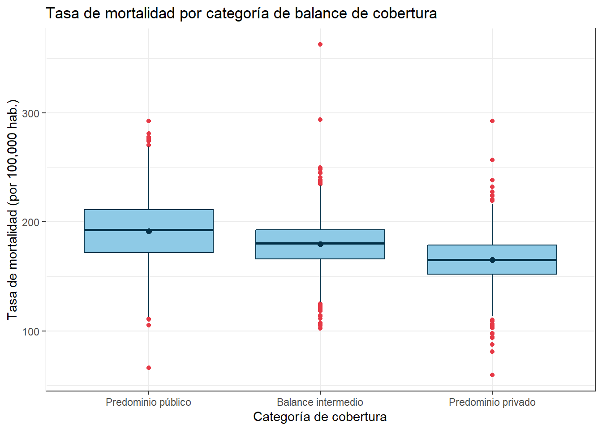

Chapter 2 Análisis paramétrico y no paramétrico
2.1 Librerías
library(readxl)
library(moments)
library(tidyverse)
library(effsize)
library(openintro)
library(nortest)
library(car)
library(coin)
library(BSDA)
library(rstatix)Se cargan los datos de cáncer.
## avganncount avgdeathsperyear target_deathrate incidencerate medincome
## Min. : 6.0 Min. : 3 Min. : 59.7 Min. : 201.3 Min. : 22640
## 1st Qu.: 76.0 1st Qu.: 28 1st Qu.:161.2 1st Qu.: 420.3 1st Qu.: 38883
## Median : 171.0 Median : 61 Median :178.1 Median : 453.5 Median : 45207
## Mean : 606.3 Mean : 186 Mean :178.7 Mean : 448.3 Mean : 47063
## 3rd Qu.: 518.0 3rd Qu.: 149 3rd Qu.:195.2 3rd Qu.: 480.9 3rd Qu.: 52492
## Max. :38150.0 Max. :14010 Max. :362.8 Max. :1206.9 Max. :125635
##
## popest2015 povertypercent studypercap binnedinc medianage
## Min. : 827 Min. : 3.20 Min. : 0.00 Length:3047 Min. : 22.30
## 1st Qu.: 11684 1st Qu.:12.15 1st Qu.: 0.00 Class :character 1st Qu.: 37.70
## Median : 26643 Median :15.90 Median : 0.00 Mode :character Median : 41.00
## Mean : 102637 Mean :16.88 Mean : 155.40 Mean : 45.27
## 3rd Qu.: 68671 3rd Qu.:20.40 3rd Qu.: 83.65 3rd Qu.: 44.00
## Max. :10170292 Max. :47.40 Max. :9762.31 Max. :624.00
##
## medianagemale medianagefemale geography percentmarried pctnohs18_24 pcths18_24
## Min. :22.40 Min. :22.30 Length:3047 Min. :23.10 Min. : 0.00 Min. : 0.0
## 1st Qu.:36.35 1st Qu.:39.10 Class :character 1st Qu.:47.75 1st Qu.:12.80 1st Qu.:29.2
## Median :39.60 Median :42.40 Mode :character Median :52.40 Median :17.10 Median :34.7
## Mean :39.57 Mean :42.15 Mean :51.77 Mean :18.22 Mean :35.0
## 3rd Qu.:42.50 3rd Qu.:45.30 3rd Qu.:56.40 3rd Qu.:22.70 3rd Qu.:40.7
## Max. :64.70 Max. :65.70 Max. :72.50 Max. :64.10 Max. :72.5
##
## pctsomecol18_24 pctbachdeg18_24 pcths25_over pctbachdeg25_over pctemployed16_over
## Min. : 7.10 Min. : 0.000 Min. : 7.50 Min. : 2.50 Min. :17.60
## 1st Qu.:34.00 1st Qu.: 3.100 1st Qu.:30.40 1st Qu.: 9.40 1st Qu.:48.60
## Median :40.40 Median : 5.400 Median :35.30 Median :12.30 Median :54.50
## Mean :40.98 Mean : 6.158 Mean :34.80 Mean :13.28 Mean :54.15
## 3rd Qu.:46.40 3rd Qu.: 8.200 3rd Qu.:39.65 3rd Qu.:16.10 3rd Qu.:60.30
## Max. :79.00 Max. :51.800 Max. :54.80 Max. :42.20 Max. :80.10
## NA's :2285 NA's :152
## pctunemployed16_over pctprivatecoverage pctprivatecoveragealone pctempprivcoverage pctpubliccoverage
## Min. : 0.400 Min. :22.30 Min. :15.70 Min. :13.5 Min. :11.20
## 1st Qu.: 5.500 1st Qu.:57.20 1st Qu.:41.00 1st Qu.:34.5 1st Qu.:30.90
## Median : 7.600 Median :65.10 Median :48.70 Median :41.1 Median :36.30
## Mean : 7.852 Mean :64.35 Mean :48.45 Mean :41.2 Mean :36.25
## 3rd Qu.: 9.700 3rd Qu.:72.10 3rd Qu.:55.60 3rd Qu.:47.7 3rd Qu.:41.55
## Max. :29.400 Max. :92.30 Max. :78.90 Max. :70.7 Max. :65.10
## NA's :609
## pctpubliccoveragealone pctwhite pctblack pctasian pctotherrace
## Min. : 2.60 Min. : 10.20 Min. : 0.0000 Min. : 0.0000 Min. : 0.0000
## 1st Qu.:14.85 1st Qu.: 77.30 1st Qu.: 0.6207 1st Qu.: 0.2542 1st Qu.: 0.2952
## Median :18.80 Median : 90.06 Median : 2.2476 Median : 0.5498 Median : 0.8262
## Mean :19.24 Mean : 83.65 Mean : 9.1080 Mean : 1.2540 Mean : 1.9835
## 3rd Qu.:23.10 3rd Qu.: 95.45 3rd Qu.:10.5097 3rd Qu.: 1.2210 3rd Qu.: 2.1780
## Max. :46.60 Max. :100.00 Max. :85.9478 Max. :42.6194 Max. :41.9303
##
## pctmarriedhouseholds birthrate
## Min. :22.99 Min. : 0.000
## 1st Qu.:47.76 1st Qu.: 4.521
## Median :51.67 Median : 5.381
## Mean :51.24 Mean : 5.640
## 3rd Qu.:55.40 3rd Qu.: 6.494
## Max. :78.08 Max. :21.326
## Ahora, repitamos todas las transformaciones de datos para preparar el análisis estadístico.
En primer lugar, volvamos a imputar los datos faltantes
data_cancer %>%
mutate(across(
where(is.numeric),
~ ifelse(is.na(.),mean(., na.rm= TRUE), .)
)) -> dfVerificar si tiene datos faltantes nuevamente
## NA_avganncount NA_avgdeathsperyear NA_target_deathrate NA_incidencerate NA_medincome NA_popest2015
## 1 0 0 0 0 0 0
## NA_povertypercent NA_studypercap NA_binnedinc NA_medianage NA_medianagemale NA_medianagefemale
## 1 0 0 0 0 0 0
## NA_geography NA_percentmarried NA_pctnohs18_24 NA_pcths18_24 NA_pctsomecol18_24 NA_pctbachdeg18_24
## 1 0 0 0 0 0 0
## NA_pcths25_over NA_pctbachdeg25_over NA_pctemployed16_over NA_pctunemployed16_over
## 1 0 0 0 0
## NA_pctprivatecoverage NA_pctprivatecoveragealone NA_pctempprivcoverage NA_pctpubliccoverage
## 1 0 0 0 0
## NA_pctpubliccoveragealone NA_pctwhite NA_pctblack NA_pctasian NA_pctotherrace
## 1 0 0 0 0 0
## NA_pctmarriedhouseholds NA_birthrate
## 1 0 0Aplicando nuevamente ingeniería de características entre pctprivatecoverage y pctpubliccoverage.
df <- df %>%
mutate(
coverage_balance = pctprivatecoverage - pctpubliccoverage,
) %>%
select(-pctprivatecoverage, -pctpubliccoverage)
df %>%
select(coverage_balance)%>%
head()## coverage_balance
## 1 42.2
## 2 39.1
## 3 21.6
## 4 13.1
## 5 17.6
## 6 16.82.2 Objetivo #3. Cuantificar la asociación lineal
Para verificar si el uso de correlación de Pearson es apropiado se evalúan los supuestos de normalidad
variables_corr <- c("target_deathrate","medincome", "pctbachdeg25_over", "coverage_balance", "pctunemployed16_over")Aplicando Shapiro-Wilk por tener menos de 5000 observaciones
# Shapiro-Wilk
resultados_shapiro <- lapply(variables_corr, function(v) {
test <- shapiro.test(df[[v]])
data.frame(variable = v, estadistico = round(test$statistic, 4), p_value = round(test$p.value, 4))
}) %>% bind_rows()
resultados_shapiro## variable estadistico p_value
## W...1 target_deathrate 0.9903 0
## W...2 medincome 0.9169 0
## W...3 pctbachdeg25_over 0.9376 0
## W...4 coverage_balance 0.9968 0
## W...5 pctunemployed16_over 0.9629 0Verificando con la prueba de Anderson-Darling
resultados_ad <- lapply(variables_corr, function(v) {
test <- ad.test(df[[v]])
data.frame(variable = v, estadistico = round(test$statistic, 4), p_value = round(test$p.value, 4))
}) %>% bind_rows()
resultados_ad## variable estadistico p_value
## A...1 target_deathrate 4.0742 0
## A...2 medincome 47.2850 0
## A...3 pctbachdeg25_over 42.1478 0
## A...4 coverage_balance 2.0212 0
## A...5 pctunemployed16_over 14.5589 0Tanto la prueba de Shapiro-Wilk como la prueba de Anderson-Darling confirman
resultados consistentes entre sí: con un 95% de confianza, se rechaza la
hipótesis de normalidad para las cinco variables evaluadas, ya que todos
los p-valores obtenidos son menores a 0.01 (prácticamente iguales a 0).
Esto indica que ni la variable respuesta (target_deathrate) ni ninguna de
las variables predictoras (medincome, pctbachdeg25_over,
coverage_balance, pctunemployed16_over) sigue una distribución normal.
Es importante destacar que coverage_balance presenta el estadístico de
Shapiro-Wilk más cercano a 1 (W = 0.9968) y el valor más bajo de
Anderson-Darling (A = 2.02) entre todas las variables, lo cual sugiere que,
aunque el supuesto de normalidad se rechaza formalmente por el tamaño
muestral, esta variable es la que más se aproxima a un comportamiento
normal —consistente con lo observado en el EDA, donde presentó una
distribución casi simétrica con curtosis cercana a 3. En contraste,
medincome y pctbachdeg25_over muestran los estadísticos de
Anderson-Darling más altos (47.29 y 42.15, respectivamente), reflejando una
desviación más marcada de la normalidad, en línea con los altos
coeficientes de asimetría y curtosis identificados previamente para ambas
variables.
Dado que el supuesto de normalidad no se cumple para ninguna de las variables involucradas, se procede a estimar la asociación mediante coeficientes de correlación no paramétricos.
En primer lugar, se calcula el coeficiente de correlación de Spearman:
resultados_spearman <- lapply(variables_corr[-1], function(v) {
test <- cor.test(df[[v]], df$target_deathrate, method = "spearman")
data.frame(
variable = v,
correlacion = round(test$estimate, 3),
p_value = round(test$p.value, 4)
)
}) %>% bind_rows()
resultados_spearman## variable correlacion p_value
## rho...1 medincome -0.463 0
## rho...2 pctbachdeg25_over -0.502 0
## rho...3 coverage_balance -0.430 0
## rho...4 pctunemployed16_over 0.403 0Posteriormente, se verifican los resultados mediante el coeficiente de correlación de Kendall’s Tau, dado que la presencia de valores repetidos (empates) en los datos impide calcular un p-valor exacto para Spearman:
resultados_kendall <- lapply(variables_corr[-1], function(v) {
test <- cor.test(df[[v]], df$target_deathrate, method = "kendall")
data.frame(
variable = v,
correlacion = round(test$estimate, 3),
p_value = round(test$p.value, 4)
)
}) %>% bind_rows()
resultados_kendall## variable correlacion p_value
## tau...1 medincome -0.325 0
## tau...2 pctbachdeg25_over -0.355 0
## tau...3 coverage_balance -0.305 0
## tau...4 pctunemployed16_over 0.283 0pctbachdeg25_over presenta la asociación más fuerte con target_deathrate
(ρ = -0.502, τ = -0.355), de signo negativo, lo que indica que a mayor
porcentaje de personas con título universitario, menor tiende a ser la
tasa de mortalidad por cáncer. Le sigue medincome (ρ = -0.463, τ = -0.325),
también con relación negativa, consistente con la idea de que un mayor
ingreso medio se asocia con menor mortalidad. coverage_balance muestra
una asociación negativa de magnitud similar (ρ = -0.430, τ = -0.305), lo
que sugiere que un mayor predominio de cobertura privada frente a la
pública se relaciona con tasas de mortalidad más bajas. Finalmente,
pctunemployed16_over es la única variable con asociación positiva
(ρ = 0.403, τ = 0.283), indicando que a mayor tasa de desempleo, mayor
tiende a ser la mortalidad por cáncer.
En todos los casos, los p-valores son menores a 0.001, por lo que las
cuatro asociaciones son estadísticamente significativas al 95% de
confianza, y ambos coeficientes coinciden tanto en el signo como en el
orden de fuerza de las variables, lo que respalda la consistencia de los
resultados. En términos de magnitud, todas las correlaciones se ubican en
un rango moderado (entre 0.3 y 0.5 en valor absoluto), lo cual confirma lo
observado en los diagramas de dispersión del EDA: cada variable por sí
sola guarda una relación real pero no lo suficientemente fuerte como para
explicar la totalidad de la variabilidad de target_deathrate, reforzando
la necesidad de un modelo de regresión múltiple que capture el efecto
conjunto de estas variables.
2.3 Objetivo #4. Contrastar el efecto del balance de cobertura médica
Paso 1: Categorización de coverage_balance en 3 grupos (terciles)
Se optó por dividir coverage_balance en terciles (en lugar de utilizar
puntos de corte fijos o arbitrarios) porque este método garantiza que cada
grupo contenga aproximadamente el mismo número de observaciones (33.3% de
los datos cada uno), lo cual es preferible para un análisis de varianza, ya
que grupos con tamaños muestrales muy desbalanceados pueden afectar la
potencia estadística de la prueba y la validez del supuesto de
homogeneidad de varianzas. Además, al basarse en los percentiles reales de
la distribución de la variable (y no en umbrales predefinidos sin
fundamento estadístico, como 0 o 30), los terciles reflejan de forma más
fiel la estructura y variabilidad observada en los datos, evitando que la
elección subjetiva de los puntos de corte introduzca sesgos en la
comparación de grupos.
terciles <- quantile(df$coverage_balance, probs = c(1/3, 2/3))
df <- df %>%
mutate(categoria_cobertura = case_when(
coverage_balance <= terciles[1] ~ "Predominio público",
coverage_balance <= terciles[2] ~ "Balance intermedio",
TRUE ~ "Predominio privado"
)) %>%
mutate(categoria_cobertura = factor(categoria_cobertura,
levels = c("Predominio público", "Balance intermedio", "Predominio privado")))
table(df$categoria_cobertura)##
## Predominio público Balance intermedio Predominio privado
## 1016 1020 1011Paso 2: Resumen descriptivo de target_deathrate por grupo
df %>%
group_by(categoria_cobertura) %>%
summarise(
n = length(target_deathrate),
media = mean(target_deathrate),
d_est = sd(target_deathrate),
mediana = median(target_deathrate),
RIC = IQR(target_deathrate),
Q1 = quantile(target_deathrate, 0.25),
Q3 = quantile(target_deathrate, 0.75),
min = min(target_deathrate),
max = max(target_deathrate),
curtosis = kurtosis(target_deathrate),
Coef_asim = skewness(target_deathrate)
)## # A tibble: 3 × 12
## categoria_cobertura n media d_est mediana RIC Q1 Q3 min max curtosis Coef_asim
## <fct> <int> <dbl> <dbl> <dbl> <dbl> <dbl> <dbl> <dbl> <dbl> <dbl> <dbl>
## 1 Predominio público 1016 191. 29.9 193. 39.5 172. 211 66.3 292. 3.45 -0.0332
## 2 Balance intermedio 1020 180. 23.6 180. 27.1 166. 193. 102. 363. 7.11 0.395
## 3 Predominio privado 1011 165. 22.7 165. 26.8 152. 179. 59.7 292. 4.82 -0.0589El resumen descriptivo de target_deathrate por categoría de balance de
cobertura muestra que la media de mortalidad disminuye a medida que
aumenta el predominio de la cobertura privada, pasando de 191.26 en
“Predominio público” a 179.66 en “Balance intermedio” y 164.99 en
“Predominio privado” —una diferencia de aproximadamente 26 muertes por
cada 100,000 habitantes entre los grupos extremos. Este mismo patrón se
replica en la mediana, lo que refuerza la consistencia de la tendencia.
Los tres grupos presentan tamaños muestrales muy similares (1016, 1020 y 1011 respectivamente), como era de esperarse al dividir la variable en terciles. En cuanto a la dispersión, “Predominio público” muestra la mayor variabilidad (DE = 29.89, RIC = 39.45), mientras que “Predominio privado” es el más homogéneo (DE = 22.66, RIC = 26.80), sugiriendo que las regiones con mayor dependencia de cobertura pública no solo presentan mortalidad más alta en promedio, sino también más heterogénea.
Respecto a la forma de las distribuciones, “Balance intermedio” destaca por una curtosis notablemente más alta (7.11) que los otros dos grupos (3.45 y 4.82), lo que indica una concentración de datos más marcada alrededor de su media junto con colas más pesadas —consistente con su valor máximo considerablemente más alto (362.8) respecto a los otros dos grupos. En cuanto a la asimetría, los tres grupos muestran coeficientes cercanos a cero (entre -0.06 y 0.39), indicando distribuciones razonablemente simétricas dentro de cada categoría, con “Balance intermedio” presentando el sesgo positivo más notorio.
Paso 3: Visualización - boxplot por grupo
df %>%
ggplot(aes(x = categoria_cobertura, y = target_deathrate)) +
geom_boxplot(fill = "#8ecae6", color = "#023047",
outlier.color = "#e63946")+
stat_summary(fun = mean, geom = 'point', shape = 20, size = 3, color = '#023047') +
labs(title = "Tasa de mortalidad por categoría de balance de cobertura",
x = "Categoría de cobertura", y = "Tasa de mortalidad (por 100,000 hab.)") +
theme_bw() +
theme(legend.position = "none")
El diagrama de cajas y bigotes muestra un patrón claro entre las tres categorías: a medida que aumenta el predominio de la cobertura privada sobre la pública, la tasa de mortalidad por cáncer tiende a disminuir. El grupo de “Predominio público” presenta la mediana más alta (cercana a 190), seguido por “Balance intermedio” (mediana alrededor de 180), y finalmente “Predominio privado” con la mediana más baja (cercana a 165).
Asimismo, se observa que la dispersión de los datos disminuye ligeramente a medida que aumenta el predominio de la cobertura privada, siendo el grupo de “Predominio público” el que presenta el rango intercuartílico más amplio. Los tres grupos muestran una cantidad considerable de valores atípicos en ambos extremos, particularmente en la cola superior.
En conjunto, estas diferencias visuales entre las medianas de los tres grupos sugieren que el tipo de cobertura médica predominante podría estar asociado con diferencias en la tasa de mortalidad, lo cual será contrastado formalmente mediante la prueba de análisis de varianza (o su alternativa no paramétrica, según los supuestos evaluados).
Paso 4: Verificar supuestos de ANOVA
Se prueba la normalidad de target_deathrate dentro de cada grupo con la prueba Shapiro-Wilk y verificando con la prueba Anderson-Darling
df %>%
group_by(categoria_cobertura) %>%
summarise(
shapiro_W = round(shapiro.test(target_deathrate)$statistic, 4),
shapiro_p = round(shapiro.test(target_deathrate)$p.value, 4),
ad_stat = round(ad.test(target_deathrate)$statistic, 4),
ad_p = round(ad.test(target_deathrate)$p.value, 4)
)## # A tibble: 3 × 5
## categoria_cobertura shapiro_W shapiro_p ad_stat ad_p
## <fct> <dbl> <dbl> <dbl> <dbl>
## 1 Predominio público 0.996 0.0092 1.17 0.0047
## 2 Balance intermedio 0.971 0 3.26 0
## 3 Predominio privado 0.986 0 1.93 0.0001Los resultados muestran que se rechaza la hipótesis de normalidad en los tres grupos (p < 0.05 en todos los casos, tanto para Shapiro-Wilk como para Anderson-Darling). El grupo “Predominio público” presenta el p-valor más alto en ambas pruebas (Shapiro: p = 0.0092; Anderson-Darling: p = 0.0047), indicando que, aunque técnicamente no cumple normalidad, es el que más se aproxima a ella entre los tres. En contraste, “Balance intermedio” muestra el rechazo más contundente (p < 0.001 en ambas pruebas), consistente con la elevada curtosis (7.11) identificada previamente en su resumen descriptivo, producto del valor atípico presente en ese grupo.
Dado que el supuesto de normalidad no se cumple en ninguno de los tres grupos, se opta por la alternativa no paramétrica de ANOVA, es decir, prueba de Kruskal-Wallis.
Paso 5: Implementar el modelo pertinente
##
## Kruskal-Wallis rank sum test
##
## data: target_deathrate by categoria_cobertura
## Kruskal-Wallis chi-squared = 491.08, df = 2, p-value < 2.2e-16Dado que no se cumple el supuesto de normalidad en ninguno de los tres grupos, se aplica la prueba no paramétrica de Kruskal-Wallis como alternativa al ANOVA clásico. El resultado obtenido (χ² = 491.08, gl = 2, p < 2.2e-16) indica que se rechaza la hipótesis nula de igualdad de distribuciones entre los tres grupos, con un nivel de significancia muy por debajo de 0.001. Esto confirma, con alta confianza estadística, que existen diferencias significativas en la tasa de mortalidad por cáncer entre las categorías de balance de cobertura médica (predominio público, balance intermedio y predominio privado).
Este resultado es consistente con el patrón observado en el análisis
descriptivo, donde las medias y medianas de target_deathrate mostraban
una disminución progresiva desde el grupo de predominio público hacia el
de predominio privado. Para determinar específicamente entre qué pares de
grupos existen estas diferencias, se procede a realizar un análisis
post-hoc mediante la prueba de Dunn.
## # A tibble: 3 × 9
## .y. group1 group2 n1 n2 statistic p p.adj p.adj.signif
## * <chr> <chr> <chr> <int> <int> <dbl> <dbl> <dbl> <chr>
## 1 target_deathrate Predominio público Balance … 1016 1020 -8.90 5.64e- 19 1.69e- 18 ****
## 2 target_deathrate Predominio público Predomin… 1016 1011 -22.0 1.63e-107 4.89e-107 ****
## 3 target_deathrate Balance intermedio Predomin… 1020 1011 -13.2 1.50e- 39 4.51e- 39 ****El análisis post-hoc mediante la prueba de Dunn confirma que las diferencias son estadísticamente significativas entre todos los pares de grupos comparados (p.adj < 0.001 en los tres casos, con el máximo nivel de significancia posible, indicado por ****).
La diferencia más marcada se observa entre “Predominio público” y “Predominio privado” (estadístico = -22.03, p.adj ≈ 4.89e-107), lo cual es coherente con que estos representan los extremos opuestos del espectro de cobertura médica. Le sigue la comparación entre “Balance intermedio” y “Predominio privado” (estadístico = -13.16, p.adj ≈ 4.51e-39), y finalmente la diferencia menos pronunciada, aunque igualmente significativa, entre “Predominio público” y “Balance intermedio” (estadístico = -8.90, p.adj ≈ 1.69e-18).
En conjunto, estos resultados confirman que la tasa de mortalidad por cáncer difiere significativamente entre las tres categorías de balance de cobertura médica, y que dicha diferencia sigue un patrón gradual y consistente: a mayor predominio de cobertura privada, menor es la tasa de mortalidad, validando estadísticamente la tendencia observada en el análisis descriptivo y gráfico previo.